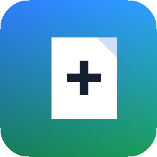

for macOSFinder can make a new folder. It cannot make a new file.
Finder 能新建文件夹，却不能新建文件。
Blank adds one menu item and nothing else. Right-click, get an empty file, rename it to whatever you need.
Blank 只加一个菜单项，此外什么都不做。右键，得到一个空文件，改成你需要的任何名字。
Version 1.0 · macOS 13 or later · Apple silicon & Intel · Signed and notarized · Free
版本 1.0 · 需要 macOS 13 或更高 · Apple 芯片与 Intel · 已签名并经 Apple 公证 · 免费
System Settings → General →
Login Items & Extensions → Finder Extensions.系统设置 → 通用 →
登录项与扩展 → 访达扩展。A Finder extension does nothing until macOS is told to load it — this step is not optional. If the menu item still does not appear, hold Option, right-click the Finder icon in the Dock, and choose Relaunch.
Finder 扩展在系统启用之前完全不工作，这一步不能跳过。如果菜单项仍然没出现， 按住 Option 右键点击 Dock 里的访达图标，选择重新开启。
No analytics. No background daemon. No file indexing. No content scanning. Blank creates one empty file in the folder you right-clicked, and that is all it ever does on your machine.
It goes online only when you click Check for Updates, which fetches a single static file and nothing else.
不做分析统计，不驻留后台进程，不索引文件，不扫描内容。 Blank 只在你右键点击的文件夹里创建一个空文件，在你的机器上它只做这一件事。
只有你主动点击检查更新时它才联网，而且只会取一个静态文件。
Blank's extension ships with
com.apple.security.temporary-exception.files.absolute-path.read-write.
That is a lot of permission for an app this small, so it deserves an answer rather
than silence.
A Finder Sync extension must be sandboxed, and inside the sandbox it can only write where the sandbox allows. The folder it needs to write to is the one you just right-clicked — known only at runtime. No open panel is involved, so the usual user-selected entitlement does not apply. Without the exception, the app cannot do the one thing it exists to do.
Apple rejected exactly this under App Store guideline 2.4.5(i), which is why Blank is distributed from here instead of the Mac App Store. The code that uses the permission is about sixty lines — it is public, and worth reading.
Blank 的扩展带有
com.apple.security.temporary-exception.files.absolute-path.read-write
这条权限。对一个这么小的应用来说它确实过大，所以应该给出解释，而不是沉默。
Finder Sync 扩展必须运行在沙盒里，而沙盒中它只能写入被允许的位置。 它需要写入的是你刚刚右键点击的那个文件夹——只有运行时才知道是哪个。 这个过程没有任何打开面板，所以常规的 user-selected 权限用不上。 没有这条例外，它就无法完成自己唯一存在的意义。
Apple 正是以 App Store 审核条款 2.4.5(i) 拒绝了这条权限，这也是 Blank 从这里分发而不上 Mac App Store 的原因。真正用到这条权限的代码大约六十行， 它是公开的，值得你读一遍。